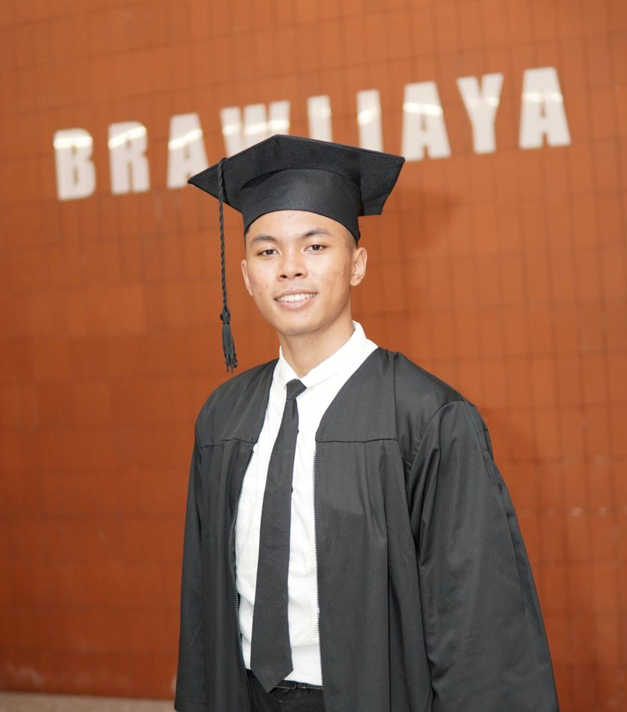

108.0%
Backlog-closure achievement after a station-wide campaign
Up from 92.1% · 495 defects Pareto-ranked · 4 fleet types
Management Trainee – Operations Engineer · since Mar 2026
Mechanical Engineer · Maintenance Planning · Reliability · CMMS Governance
I develop fleet-wide maintenance planning and CMMS governance for a 400+ aircraft fleet across 64 stations, and provide remote technical support for breakdown recovery across rotating machinery, pressurized hydraulic and fluid systems, electro-mechanical instrumentation and corrosion-preventive preservation.
“Keep it safe. Keep it running. Keep improving.”
Backlog-closure achievement after a station-wide campaign
Up from 92.1% · 495 defects Pareto-ranked · 4 fleet types
Critical downtime recovered in-house within 24 h
96 events · target 75%
Delay-free first departures
4,732 departures · Sep 2026
CMMS records cross-checked in one month
77 missing logs · 591 pending WOs flagged
Daily data reconciliation
Down from 2.5 h (~80% faster)
Breakdowns over 24 h that waited on spares or tools (~80%)
Coded events · Mar–Nov 2026
Hidden shortages exposed by an 18% workforce buffer
1,171 personnel · 104 stations · shortages 9 → 26
Reported results at PT Batam Aero Technic (Lion Air Group), Mar–Nov 2026. Aircraft tail registrations and internal work-order numbers are omitted for operational confidentiality.

About me
I'm a Mechanical Engineer (B.Eng., Universitas Brawijaya) and a certified General Occupational Safety & Health Expert (Ahli K3 Umum, BNSP).
Since March 2026 I've worked as a Management Trainee – Operations Engineer at PT Batam Aero Technic (Lion Air Group). I develop maintenance performance planning for a 400+ aircraft, 6-operator fleet across 64 stations in Indonesia, Malaysia and Thailand, turning CMMS work-order, deferred-defect and downtime data into availability, backlog and man-hour decisions. I build the monthly production KPI report for the Lion Group Board of Directors.
When equipment breaks down at a remote station, I provide remote technical support: lining up the troubleshooting sequence with the licensed field team, getting the right test equipment and spares to site, and following the fault until a test proves the repair. That covers rotating machinery (vibration and balancing), pressurized hydraulic and fluid systems, electro-mechanical sensors and wiring, and corrosion-preventive preservation.
Before that, I built my engineering base in CAD, CNC programming, materials testing and a fuel-system internship at PT Dirgantara Indonesia. The question behind all of it stays the same: what does the data say we should do next?
About my role: repairs are carried out by licensed field technicians. My part is planning, remote technical support and data control, from the first fault report to the test that releases the equipment.
How I work
Every breakdown and every record goes through the same six steps, held in place by a fixed review rhythm.
Flight logs, job reports and work orders from 64 stations.
Deferred defects Pareto-ranked by system; items open over 3 days escalated.
Troubleshooting and fault-isolation steps agreed with the licensed field team.
Test equipment and parts moved to site; delay causes coded.
Operational, pressure or leak test before release to service.
Logs, job reports and work orders reconciled within 24 h.
Selected work
Filter by discipline, then open a case for the full story: problem, action and impact, the key engineering insight, the parts, tools and standards involved, and the data behind it.
Mechanical design
3D models and drawings from coursework, software training and the internship. Open any model to zoom into its drawings.
What I work with
Self-assessed against daily use at work, in training and in the lab.
Experience, education & credentials
Proof
Certificates and photos behind the work above. Personal ID numbers on certificates are blurred.
Let's connect
The quickest way to reach me is WhatsApp or email.